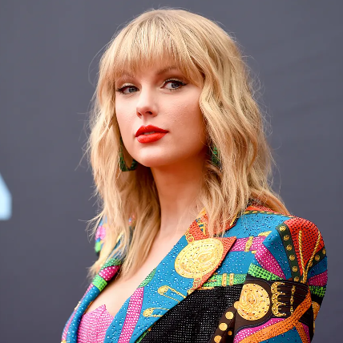

WELCOME
TAYLOR SWIFT
Taylor Swift es una cantautora, productora, directora, actriz y empresaria estadounidense.
Información
¿Quién es Taylor Swift?
Taylor Swift es una cantante y compositora estadounidense. Es conocida por su inicio en la música country y transición al pop, ha sido una de las cantautoras más jóvenes en ser firmadas por una compañía disquera y una de las artistas con música más vendida de la industria. Taylor es una de las 100 personas más influyentes del mundo, título que ha cosechado con el gran éxito que ha tenido cada una de sus canciones.
¿Cómo inició la carrera de Taylor Swift?
Inspirada por la cantante Shania Twain, Taylor dejó las lecciones de actuación para dedicarse a cantar en festivales de música. A los 11 años viajó a Tennessee junto a su madre para introducir sus grabaciones de canciones de Dolly Parton y las Dixie Chicks en disqueras, la cuales fueron rechazadas. Luego de que la joven Taylor aprendió a tocar la guitarra y empezó sus primeras sesiones de trabajo de composición de letras, se le dio la oportunidad de modelar en el programa de estrellas emergentes de la marca Abercrombie & Fitch, y con ayuda del agente de talentos Dan Dymtrow logró tener una canción original para la marca Maybelline. La familia Swift se mudó a Nashville para que Taylor pudiera asistir a reuniones con disqueras y sesiones de trabajo, la cantante trabajaba dos horas al día con compositores de música country de la firma Music Row. Taylor se convirtió en la artista más joven en ser firmada por la firma Sony/ATV Music Publishing, la cual dejó poco tiempo después para formar parte del primer grupo de talentos de la recién fundada firma disquera Big Machine Records. Con su nueva casa disquera Taylor produjo su álbum epónimo Taylor Swift, lanzado el 24 de octubre de 2006
Actualidad
Taylor Swift es una de las figuras femeninas más importantes del pop, ha sido descrita por los medios como parte de un movimiento de jóvenes mujeres que han dado música a una nueva generación de fanáticos en búsqueda de su identidad en un momento lleno de mensajes culturales turbulentos. Como cantante, actriz y activista, Taylor ha alzado su voz por causas como el control de armas y la lucha en contra del racismo.
